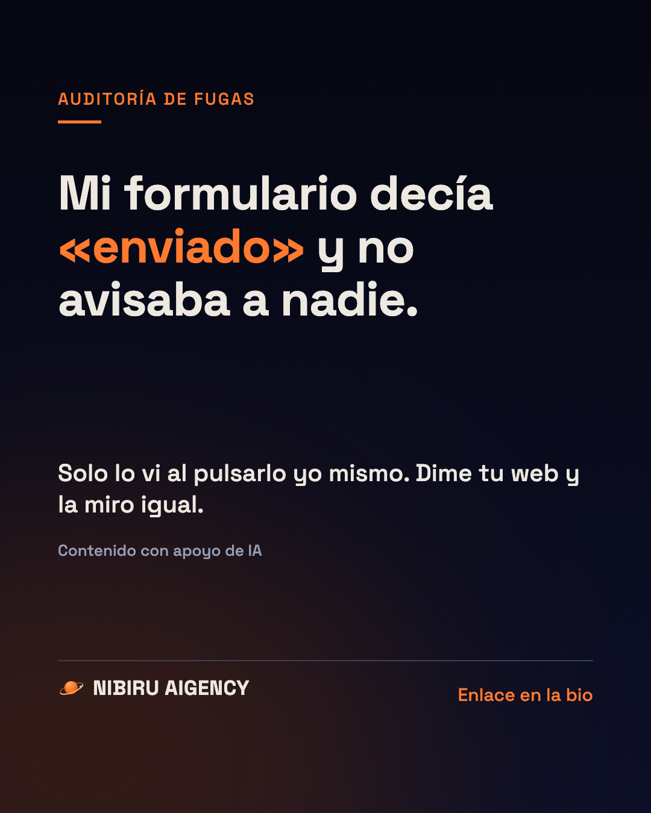

Auditoría de Fugas
Mi formulario decía «enviado» y no avisaba a nadie

Mi propia web decía «enviado» cuando alguien rellenaba el formulario. Y no le avisaba a nadie.
Lo descubrí pulsándolo yo mismo. Nadie se había quejado, porque quien no recibe respuesta no se queja. Se va.
Pasa más de lo que crees, y casi nunca se ve desde fuera.
La Auditoría de Fugas es eso: reviso tu web, tu ficha de Google y cómo contestas a quien te escribe, y te digo qué se está perdiendo y qué arreglar primero. 197 €.
Reservar la Auditoría de Fugas · 197 €
Contenido con apoyo de IA. Esta página no contiene cifras de resultados ni opiniones de clientes. Contacto: hola@tusleadsenautomatico.com.